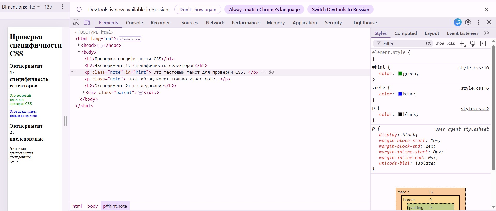
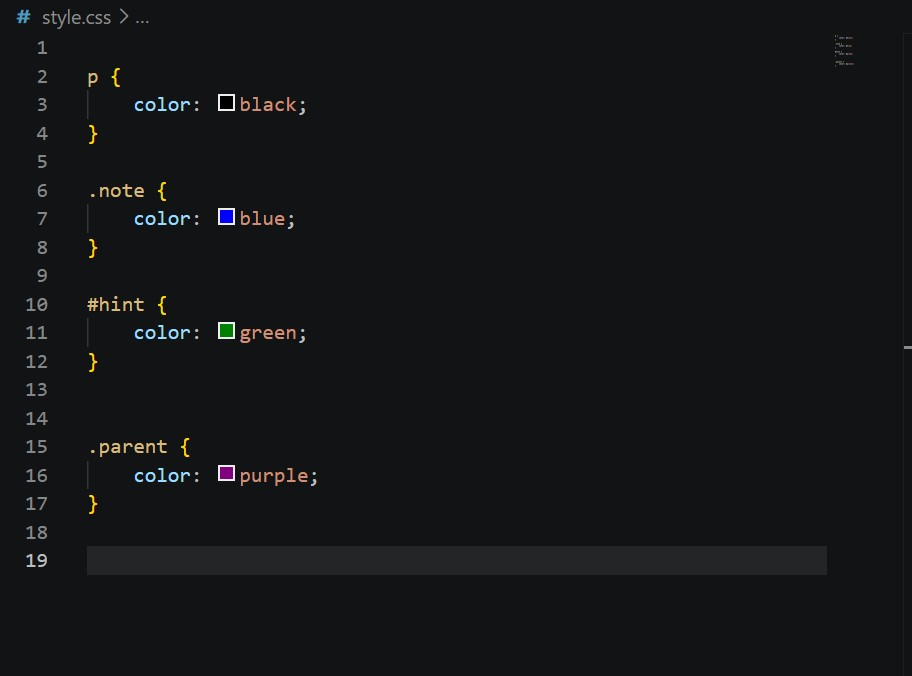
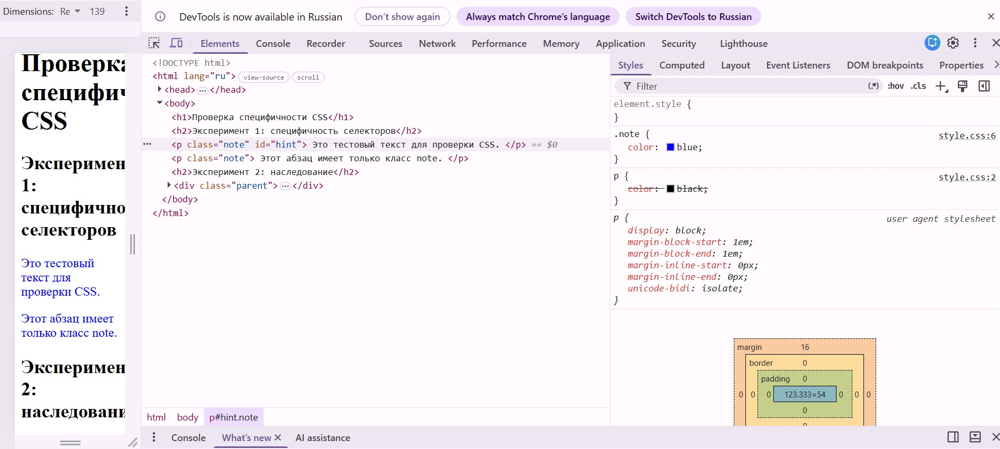
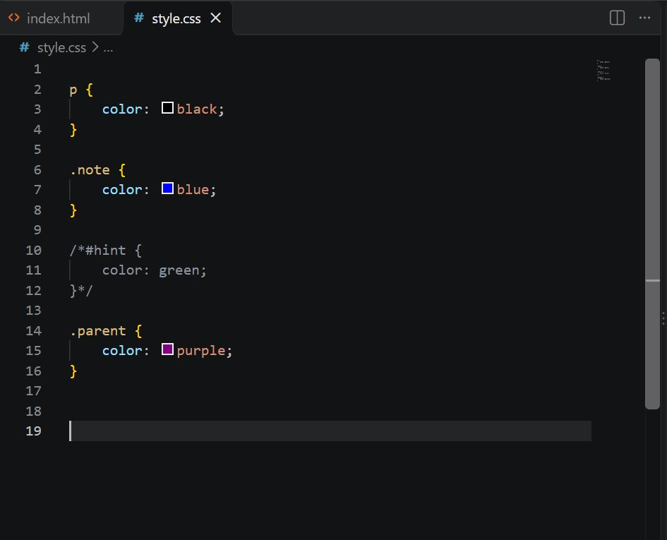

Это тестовый текст для проверки CSS.
Этот абзац имеет только класс note.
Этот текст демонстрирует наследование цвета.
В DevTools проверено действие трёх CSS-селекторов. Правило #hint имеет наибольшую специфичность и задаёт зелёный цвет. Правила .note и p перечёркнуты, поскольку уступают ему по приоритету.

На изображении показан исходный CSS-код с тремя правилами: для тега p, класса .note и идентификатора #hint. Каждому правилу задан свой цвет текста.

После удаления правила #hint цвет первого абзаца изменился на синий. Теперь активным стало правило .note, а правило p осталось перечёркнутым.

На изображении показан CSS-код после удаления правила #hint. Остались два селектора: .note и p. Класс .note имеет более высокую специфичность, чем селектор тега p.
